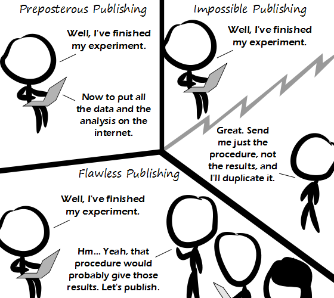

Comic JK 915
When I Feel Like It
⇤
<
?
>
⇥

⇤
<
?
>
⇥
Forum
.
RSS
.
Digg
.
Facebook
.
Reddit
.
Twitter
.
Stumbleupon
Enter your thoughts on number three billion here. Please, no spamming, trolling, phreaking, or reverting the changes in the first line. Implausible: My experiments have confirmed that neutrinos are faster than light. Double Implausible: My process shows that my photons are faster than the neutrinos which are faster than light. Triple Implausible: My processiments have confirmed that photons are faster than photons. Quadruple Implausible: My processinos are faster than processes that are faster than light. Quintuple Implausible: My neutrinos are better than yours. Nyah nyah. Sextuple Improbable: My gluons are stickier than you neutrinons! Heptuple Improbable: Previous research by ... et al. was actually pretty good! Octuple Unconceivable! My research indicates that the cat was dead! You monsters! Nonuple Improbable: People make 9 improbables. If humans were rational and honest there would be no need for this "duplicability" dung. {v1.1 minor bugfix} > Even if humans were rational and honest, feces would still happen. > I'm concerned you don't know what "random" means. >> I didn't mean that just doing each experiment once would be enough. I meant that when a scientist said "I've done this and got that result" you could update your beliefs (almost) as if you had done it yourself. Obviously you'd still have to take random and systematic error into account, but 95% of the "burden of proof" today is just to make sure you're not a looney or a liar. >> Or made a mistake somewhere. >>> No that's the remaining 5%. > I'm more concerned you don't know what poo means >>the bear in a series of stories written by A. A. Milne... >>> No, that's Pooh; poo is what Pooh does in the woods. >>>>I thought he walked in the woods. I'd be very surprised if a stuffed animal were capable of producing excrement. >>>>> But he does ingest a lot of honey. That's got to come out at some point right? Meh - even people who claim to trust real science dismiss things without even looking at the studies if the findings conflict with preconceived notions or suggest there is something wrong with their lifestyle. There is such a thing as blind faith in science. >Amen to that! >>erm... surely "blind faith" does *not* allow "rejecting" the bits that "conflict with preconceived notions"... that, in essence is what makes it "blind faith" as opposed to ordinary "faith"... after all, not every Catholic is a member of the Spanish Inqui---NO-ONE EXPECTS THE SPANISH INQUISITION!!! >>>Are you talking about Apple fanbois here? >>>>( while Apple devotees are often castigasted for blind obediance to their faith, I've seen very similar behaviour from people over their chosen brand of CPU or graphics card... though not over harddrives or sound cards, curiously enough... ) >>>>>Tis normal human behaviour. Hard drives or sound cards are just not charismatic enough (but imagine if they were made by Apple, Google or Microsoft!). >>>>>> I religiously swear by Western Digital and M-Audio. >>>>>>> We can all agree that Realtek sucks. >>>>>>>>>SOUNDBLASTER ALL THE WAY! (I need my DOOM Sound Effects on my 486!) >>>>>>>>>>( have a look at zdoom - doom ported to Win32 ) >>>>>>>>>> Psh. Soundblaster is consumer-grade shite. M-Audio is for real work. Your mother experimented on you as a kid and tried to publish the results, but no one would accept them, and I think this explains a lot of things.